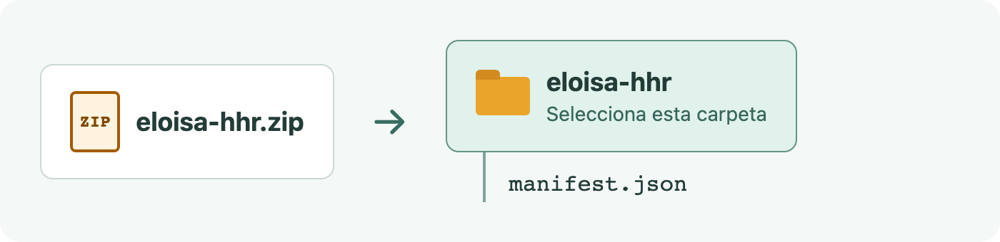
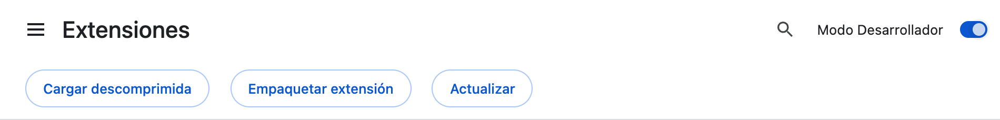

Guía de instalación
- Descarga el ZIP.
- Extrae la carpeta. En Windows, elige Extraer todo. En Mac, haz doble clic.

- Abre
chrome://extensionsen Chrome. - Activa Modo Desarrollador.

- Pulsa Cargar descomprimida.
- Selecciona la carpeta que contiene
manifest.json.
Actualizar una instalación
Extrae el ZIP nuevo y reemplaza el contenido de la carpeta original. En chrome://extensions, pulsa Recargar en Rayen → HHR. Guarda tu trabajo antes de recargar las pestañas de Eloísa.